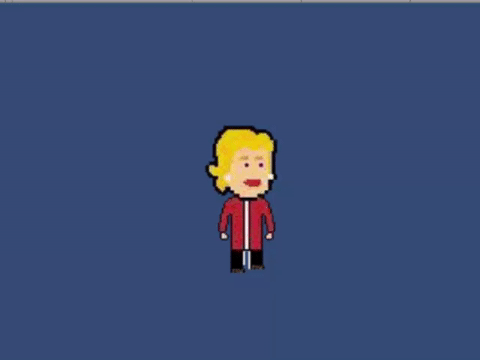
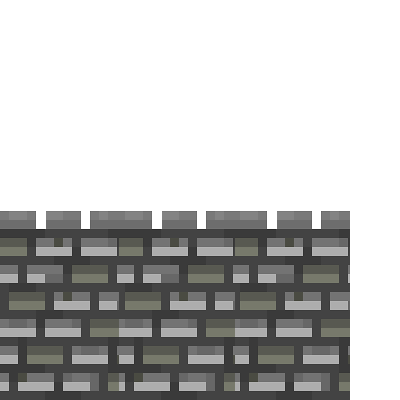

Motivations
This year's presidential race is bringing more and more attention to the political process. Between the provoking antics of Donald Trump, the political revolution sparked by Senator Sanders, the scandals of Secretary Clinton, and the hilarious statements provided by the other GOP candidates, there is clearly something unique about this year's race. Why not make an action fighting game for this memorable presidential election?
We hope that this game may temporarily relieve you from the debilitating fear that Donald Trump could one day lead our nation.
Mechanics
Programming Process
The game was created using the popular game engine Unity. Using a combination of online resources such as pixel art and music, various image editors, and an unimaginably high number of Youtube tutorials, we crafted something close to what we originally imagined. Obviously there is much room for improvement, but we are proud of what we have thus far.
The first thing we did was find pixel art for the characters (Trump, Clinton, and Sanders). We created relatively simple animations for our characters by making one of the characters' legs longer than the other, and by having the computer rapidly alternate between the two frames. This gave the illusion that the character was walking.

Our efforts regarding animations focused more on the attacks/movements of the characters, because those animations are much more noticable than the aforementioned walking one. To work on the rest of the project, we basically adapted various edited pixel art into the Unity project to create a animations just as we had done for the characters' direct movements.
Website
This website was coded using HTML and CSS, and was hosted through Github.
Game Mechanics

The game attempts to use imputs from a player keyboard (e.g. WASD) to move characters around the screen. They are able to deal damage to each other by punching, but also have specialized attacks for each specific character (for example, Trump can "build a wall").
Because of time constraints, we designed the game around one map. It consists of a long base floor, and two platforms off of which characters can jump.
We also created our own start screen for the game that mimics the start screen of the Smash games, featuring Donald Trump's breathtakingly beautiful face (see top of the page).
Our devpost link
Credits
Director: Rohan (I worked with Unity. I would receive various character art, level images, and ideas from my teammates, and put them into the game. I primarily worked in C#. This was my first hackathon, and the the first time I've used Unity in three years)
Chief Designer: Shoji (I discovered the original images for the characters, created sprite sheets with different movements of the characters, set up the battlefield, and helped with the C# development in Unity. I also helped get the website hosted and domain attained.)
Animations: Jenny (I was the main creator for the animations, sprites, and I helped with the syntax and coding of the HTML and CSS. I was also responsible for uploading the "final" (its never perfect!) product to GitHub.)
Web Design: Brian (I set up the page's website, and contributed a bit to the project's animations)
Citations
Idea Sources: Nintendo, Donald Drumpf
Sources of Help: The Internet, each other
Readers: you